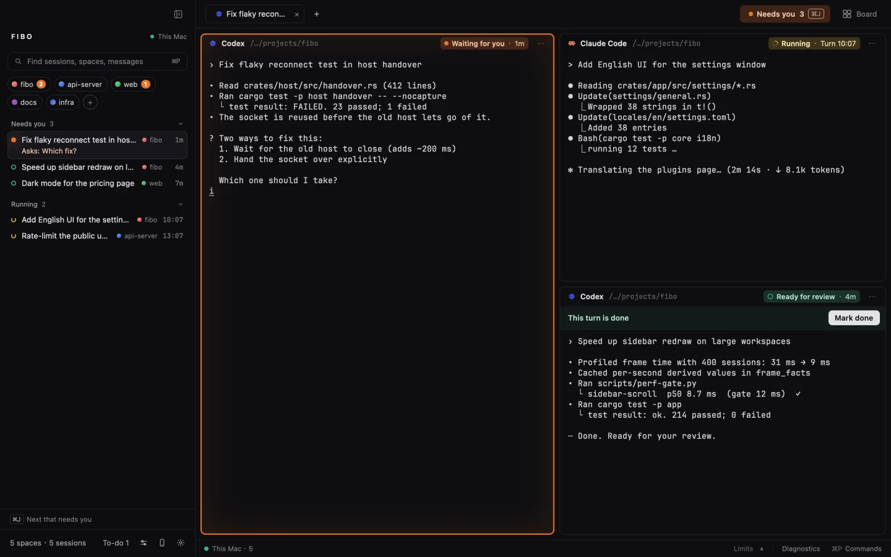
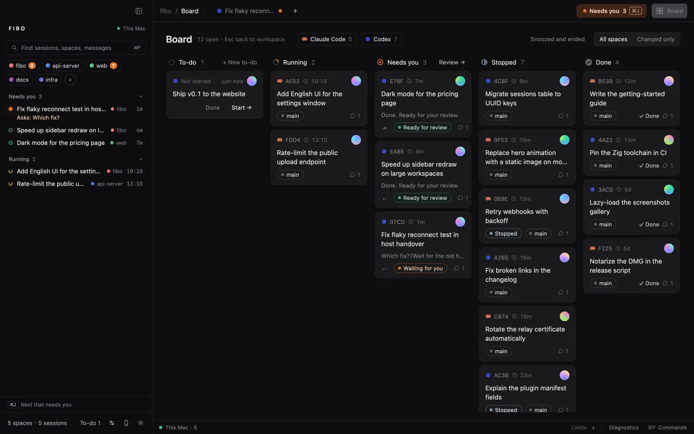
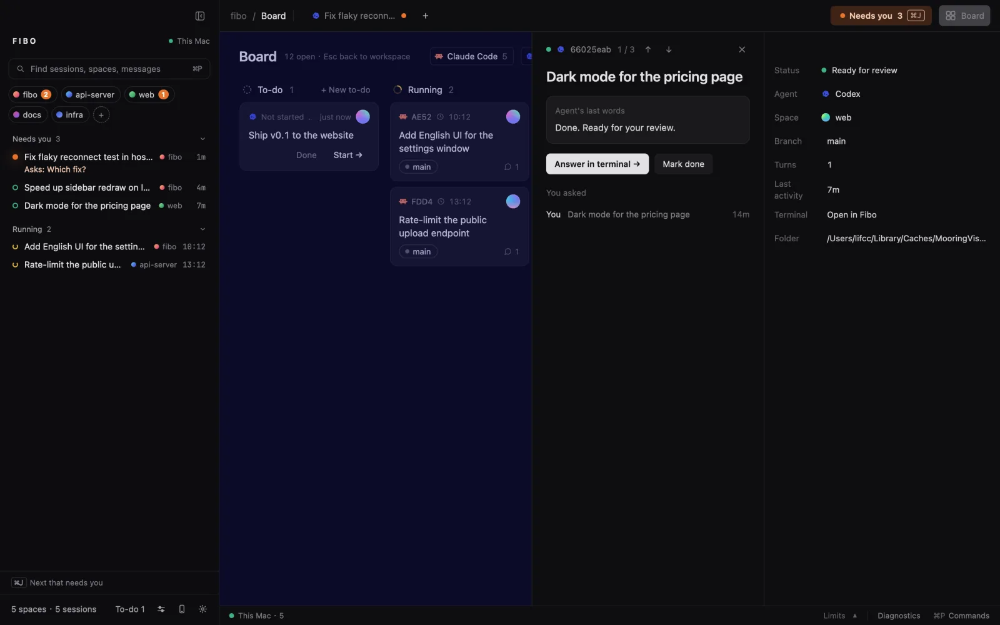
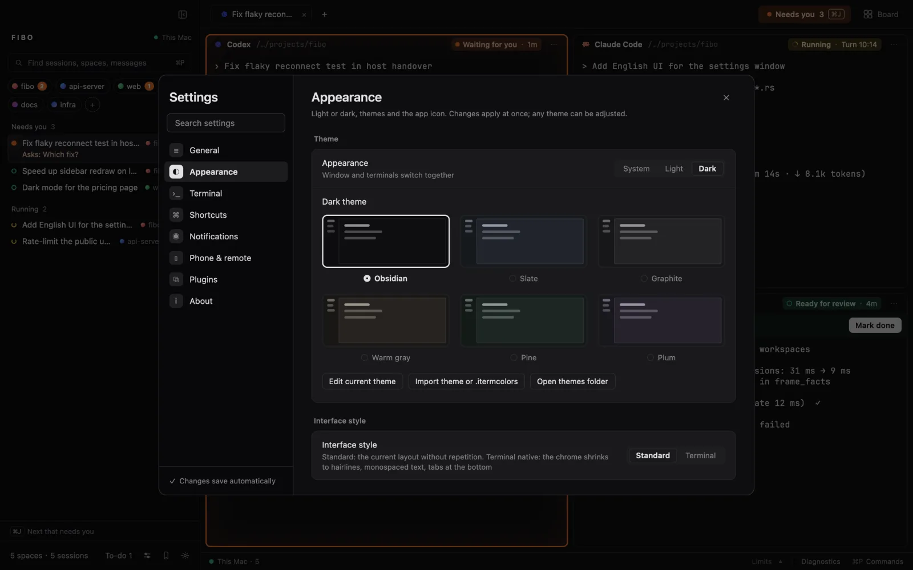
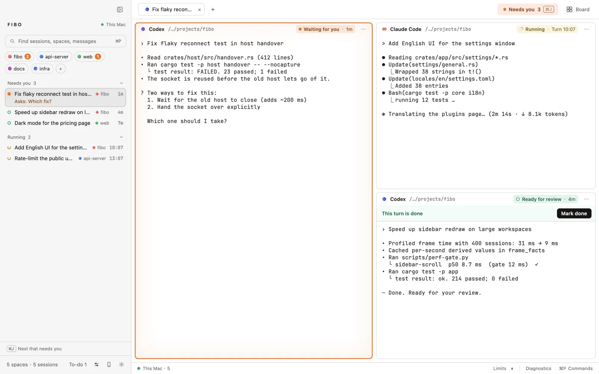
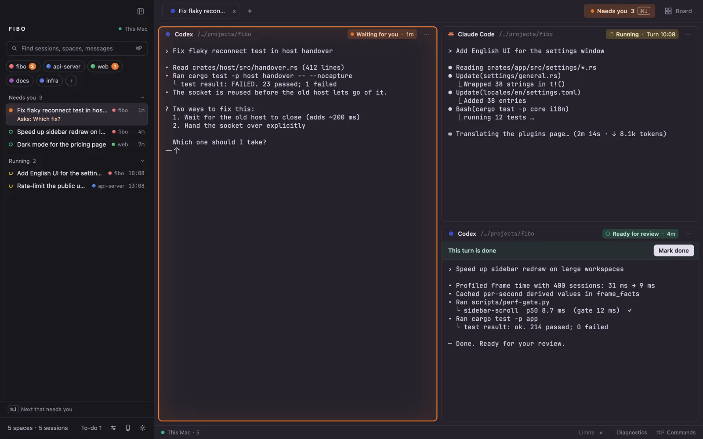

Real terminals, your CLIs
Claude Code, Codex, Grok, Cursor Agent and more run as themselves in real terminals (libghostty). Fibo doesn't wrap their models or change how they work.
Fibo is a native macOS workbench for running Claude Code, Codex and other coding agents side by side, each in a real terminal, with one place that shows which one needs you.
brew install --cask majiayu000/tap/fiboFree and open source (MIT). Apple silicon. Signed and notarized by Apple.
Why the name
Fibonacci counted rabbits: one pair, then another, then two, three, five, eight. Coding agents multiply the same way. You start one on a bug, another on tests, a third on docs, and soon you are switching windows to find out which one stopped to ask you something.
Fibo keeps count. Every agent lives in a real terminal in one window, and its state is always on screen.
See who needs you
Agents run side by side. The sidebar sorts them by what they need from you, and each pane says it in the header.

One board
The board lines up every session from every space: to-do, running, needs you, stopped, done. Open a card for the agent's last words and jump straight into its terminal.





Why Fibo
Claude Code, Codex, Grok, Cursor Agent and more run as themselves in real terminals (libghostty). Fibo doesn't wrap their models or change how they work.
A background host keeps every terminal running when the window closes or the app updates itself. After a reboot, interrupted sessions offer to resume.
A finished turn is “ready for review”, not “done”. Mark it done yourself, or send it back from the same pane.
Rust and GPUI, drawn on the GPU, with frame-time checks in CI so a long day of sessions doesn't slow the window down.
A companion phone app, still in development, answers an agent's question or approves a step while you're away. The relay is end-to-end encrypted and you can host your own.
Fibo reads your agents' transcripts on your Mac and uploads nothing itself. MIT licensed; plugins are plain files.
Install
Install and upgrade with brew.
brew install --cask majiayu000/tap/fiboNeeds Xcode, Zig 0.16 and rustup.
git clone https://github.com/majiayu000/mooring
cd mooring && ./bootstrap.sh && ./run.shThen run claude or codex in a Fibo terminal. Your agent CLIs, accounts and subscriptions stay your own.
FAQ
Neither on its own: it is a workbench around real terminals and the agent CLIs you already use. It shows their state and keeps them running; it does not replace an agent's model or loop.
Claude Code, Codex, Grok Build, Cursor Agent and Qoder CLI are built in; OpenCode comes as a plugin, and others can be added the same way. Any other program still runs in a plain terminal.
No. Fibo reads local transcripts and does not upload them. Your agent CLIs still talk to their own providers. The optional phone link is end-to-end encrypted.
Only if you install the optional hooks from the welcome screen or with fibo hooks install; they make state changes instant. fibo hooks uninstall removes them.
Yes. It was renamed Fibo in November 2026. Existing installs keep working: the mooring command, settings and terminals carry over.
The app is macOS only today. The shared crates build on Linux and Windows, but there is no release for them.
Open a GitHub issue with your macOS version, the agent CLI and its version, and steps to reproduce. Remove credentials and private content from logs first.
中文介绍
Fibo 是原生 macOS 上的 coding agent 工作台。Claude Code、Codex 等 agent 各自跑在真终端里，并排放在一个窗口；谁在等你回答、谁在跑、谁这一轮做完了等你验收，侧栏和看板上一眼看清，⌘J 直接跳到下一个要你处理的。
名字来自斐波那契的兔子：一对生两对，两对生三对。agent 也是这样一个接一个冒出来，Fibo 帮你数着、管着。原名 Mooring，老安装照常能用。